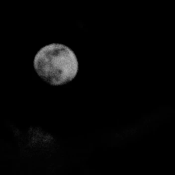

 Power Outages Raise Concern Across the NationThe frequency of power outages are rising in communities creating unease among citizens nationwide. These outages are making everyday life difficult and raise doubts about America’s electrical infrastructure. In the recent weeks, reports of localized power outages are coming with more frequency leaving residents and officials looking for answers in an atmosphere that is shrouded by uncertainty. Although the reason for the increased outages is not clear, speculation has focused on solar flare activity affecting Earth’s atmosphere. Such phenomena have been known to interfere with power grids; however, experts warn that evidence connecting the solar flares to the recent cases of outages is yet inconclusive. While recognizing the difficulties created by such disruptions, officials have attempted to assure citizens that there is no imminent reason for panic. The increase in outages has further emphasized the need for constant vigilance and preparedness on unforeseen incidents. While utility providers find and eliminate factors which cause such disruptions, communities are advised to save energy and be resilient during times of crises. |
© 1998 nicocorp inc.